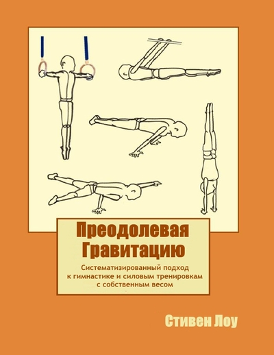

Вводная часть
Предисловие
Вступление
Часть I — Как разработать собственную программу тренировок (Раздел в разработке)
Глава 1. Закладываем фундамент
Принцип рычага
Упражнения с открытой и замкнутой цепью
Резюме
Глава 2. Основы физиологии силы
Континуум повторений
Типы мышечных волокон
Моторные единицы и центральная нервная система
Нейронное развитие силы
Роль центральной нервной системы
Прочие нюансы
Гипертрофия
Резюме
Глава 3. Постановка и достижение целей
Выбор целей
Целеустремленность
Пауза
Резюме
Глава 4. Поддержание структурного баланса
Здоровье плеч
Простой способ
Сложный способ
Для чего
Пауза
Резюме
Глава 5. Таблицы прогрессий силы и навыков
Как пользоваться таблицами
Степень освоения
Классификация компетенции
Рекомендации
Пауза
Резюме
Глава 6. Основной порядок тренировки
Разминка и проработка навыков
Центральная часть тренировки
Профилактика, подвижность и гибкость
Пауза
Резюме
Глава 7. Структурируем тренировку
Тренировки на все тело или сплит-тренировки
Базовые упражнения или изометрика
Цели и выбор упражнений
Подбираем упражнения
Порядок упражнений
Объединение упражнений в программу
Пауза
Резюме
Глава 8. Программирование
Программирование внутри тренировки и линейная прогрессия
Стресс, адаптация, суперкомпенсация, тренированность и усталость
Базовая периодизация и внутренняя структура тренировки
Типы упражнений
Повторения и подходы
Обычные двигательные упражнения
Изометрика
Эксцентрика
Кратко о повторениях
Краткий свод таблиц
Время отдыха между подходами и внутренняя структура тренировки
Общая сила и изометрические упражнения
Связки упражнений
Метод GTG
Тренировка мышечного корсета
Прекращение тренировок
Пауза
Резюме
Глава 9. Программирование и совершенствование
Внутренние факторы мезоциклов
Начальный этап
Средний этап
Продвинутый этап
Факторы в период между мезоциклами
Сила элитного уровня
Дополнительные соображения о программировании
Пауза
Резюме
Глава 10. Коротко о перенапряженности и перетренированности
Перенапряженность
Перетренированность
Резюме
Глава 11. Кросс-тренинг и кардио
Кросс-тренинг
Паркур и другие спортивные дисциплины
Кардио
Резюме
Часть II — Забота о здоровье и помощь при травмах
Глава 12. Аспекты травм
О боли и болезненности
Тренировки при болезненности
Этиология травм
Факторы, которые влияют на склонность к травмам
Острые и хронические травмы
Резюме
Глава 13. Оценка травм и реабилитация
Оценка травмы
Общая реабилитация
Резюме
Глава 14. Программирование при травмах и общая реабилитация
Тренировка поврежденной конечности
Тренировка противоположной конечности
Неповрежденные конечности
Общие концепции программирования для реабилитации
Рекомендации по упражнениям
Резюме
Глава 15. Распространенные травмы
Тендинит
Перенапряжения
Головная боль
Костохондрит
Грудные позвонки
Поясница
Импинджмент
АК сустав
Радикулопатия
Боль в запястье
Хруст, щелчки и скрип
Судороги
Дисбаланс
Резюме
Глава 16. Преабилитация, подвижность и гибкость
Преабилитация
Подвижность и гибкость
Физический аспект
Воротная теория боли
Слишком много — это сколько?
Психологический аспект
Что выбрать?
О растяжке и гибкости
Бедра
Спина
Плечи
Локти
Запястья
Резюме
Глава 17. Обобщенно о здоровье и травмах
Порядок лечения травм
Упражнения и травмы
Боль
Диапазон движения и сила
Растяжка
Цели при травмах
Резюме
Глава 18. Образ жизни
Сон
Питание
Метаболическая гибкость
Тренировочное питание
Добавки
Тренировки при болезни
Резюме
Часть III — Справочные материалы (Раздел в разработке)
Приложение A
Введение
Разминка
Уровни 1 и 2
Тренировочная программа 1-2 уровней
Приложение B
Рекомендуемое снаряжение
Стойки на руках
Стойки на кольцах
Отжимания в стойке на руках
Отжимания в стойке на руках на кольцах
Жим
Силовые выходы в стойку на руках
Силовые выходы в стойку на руках на кольцах с согнутых рук
Силовые выходы в стойку на руках с прямых рук
Упоры углом
Горизонтальный вис сзади
Горизонтальный вис спереди
Подтягивания горизонтальном висе спереди
Горизонтальные подтягивания
Подтягивания
Подтягивания на кольцах и на одной руке
Подтягивания с отягощением
Взрывные подтягивания
Крест
Горизонт
Горизонт на кольцах
Отжимания в «горизонте»
Отжимания в «горизонте» на кольцах
Отжимания
Отжимания одной рукой
Вертикальные отжимания
Вертикальные отжимания на кольцах
Вертикальные отжимания с отягощением
Выходы силой / Перевернутые выходы силой
Горизонтальные упоры на локтях
Флажки
Гимнастический ролик
Статические элементы на кольцах
Выходы разгибом на кольцах
Обороты на кольцах
Прочие упражнения
Приложение C
Таблица прогрессий силы и навыков №1
Таблица прогрессий силы и навыков №2
Таблица прогрессий силы и навыков №3
Таблица прогрессий силы и навыков №4
Таблицы Прилепина